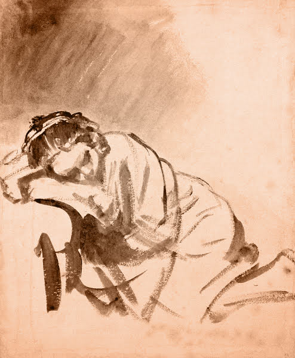

Health
Your body goes through extreme physical duress following a divorce or breakup: sleep issues, stress hormones, food problems, lethargy, anxiety, and more.
Ignoring these issues will only worsen your suffering. Above anything else, you need to focus on your health.
Sleep well. It can be really hard to sleep after a breakup because you're so stressed, emotional and depressed that your mind just doesn't let you fall asleep. Lack of sleep just destroys you and makes everything worse: you'll be more likely to get sick, more likely to screw up the rest of your life, and it definitely will make your mood even more depressed than it already is.
There's a lot of controversy about sleeping aids. There are many different types, and each has its disadvantages, short- and long-term side effects, and potential addictive properties. So research and come to your own conclusions based on your situation.
I almost never take medicine, and I was very opposed to sleeping pills specifically"... but after one month of only managing to get 1-2 hours of sleep spread over several intermittent naps in any given day following my breakup, my life was falling apart and I realized I had to do something just to keep functioning. I was scared, but I took sleeping pills and they really helped.
In my case, I was so emotional and anxious (I was allowing my ex to pull me back and forth) that I still only slept 4-6 hours even with the help of the sleeping pills in the next months following the breakup, but at least that was enough for me to function and keep my life from completely self-destructing.
Exercise. A lot. Your mind and body are in shock. Your stress and anxiety levels are soaring, which releases increased amounts of the hormone cortisol. Exercise directly fights against this stress reaction by lowering your cortisol levels.
Exercise improves the immune system through the increased production of antibodies and T-cells. It helps improve your sleep. Heavy exercise (intense cardio like running or biking, playing intensive sports, or lifting very heavy weights) causes your body to produce endorphins (and possibly other chemicals"... the mechanism isn't understood completely) which block pain and give a feeling of happiness and euphoria.
Plus, being in shape and feeling (and looking!) good can really help your confidence, which is very important after a breakup.
I know from personal experience that it's so difficult to motivate to exercise when you're feeling completely devastated from a breakup. Several times I managed to force myself to get dressed up in my workout clothes and go to the gym, but then I just sat in front of the bike and couldn't make myself do anything. I had no energy, it was all pointless, nothing mattered and it was just stupid to exercise, bla, bla.
One good suggestion to overcome this problem is group activities: spinning classes, team sports, group runs, yoga classes, whatever form of exercise you enjoy. The outside pressure forces you to do the exercise. And you get social contact and spend time with people doing something other than talking about your breakup.
Eat well.What's interesting to me after having read so many breakup stories is that many people suffer from eating problems following a breakup, but the type of eating problem ranges all over the place.
Many people just stop eating and lose huge amounts of weight. Others eat non-stop because it seems to be the only form of happiness they can feel. Some people go through mounds of junk food, others find solace in plates of pasta and comfort food. Some people eat a lot and vomit endlessly (not on purpose) because their heartbreak and stress levels make it difficult to keep food down. Everyone reacts differently.
Regardless of how your eating problem manifests, it's critical that you eat normally for yourself " not too much, not too little, just whatever is normal for you. If you really want comfort foods, it's ok for a bit"... but gallon after gallon of ice cream is not going to solve your problem and getting fat and gross will only make you feel worse about yourself.
All these health suggestions might sound pretty obvious, and they are. But it's very easy to lose track of the important things when you hurt so much. I've gone through it myself and have seen many, many internet posters suffer so much because of health issues stemming from the breakup pain. So really - focus on your health, it's important.